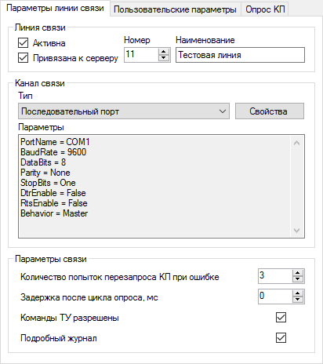

Рис. 1. Добавление объекта
На рынке представлено огромное количество устройств, работающих в самых разных областях автоматизации, которые поддерживают обмен данными по протоколу Modbus. Modbus - это открытый коммуникационный протокол, использующий клиент-серверную модель, основанную на транзакциях, состоящих из запроса и ответа. Реализация поддержки протокола Modbus комплексом Rapid SCADA на порядок расширяет перечень устройств, с которыми может работать комплекс. Поддерживаются следующие режимы передачи данных: RTU, ASCII, TCP.
Общая последовательность настройки:
Далее приводится пошаговое описание подключения нового Modbus устройства. Чтобы процесс добавления устройства полностью совпадал с текстом статьи, необходимо установить Rapid SCADA с конфигурацией по умолчанию.
Редактирование базы конфигурации выполняется с помощью программы Администратор.
Запустите Администратор. Откройте таблицу Объекты и добавьте новую строку для объекта 2 "Тестовый объект" (рис. 1). Затем откройте таблицу Линии связи и добавьте линию 11 "Тестовая линия" (рис. 2). После чего откройте таблицу КП и добавьте КП 101 "Тестовый КП" (рис. 3).
Для КП необходимо заполнить следующие поля (рис. 3):
| Тип КП: | Modbus |
| Адрес: | Modbus адрес Вашего устройства, например, 1 |
| Позывной: | IP-адрес, если устройство подключено по сети Ethernet. В противном случае, пустой |
| Линия связи: | "Тестовая линия", которая была только что создана |
Рис. 1. Добавление объекта

Рис. 2. Добавление линии связи

Рис. 3. Добавление КП
После того, как база конфигурации отредактирована, её необходимо передать Серверу, щёлкнув по кнопке  . Чтобы изменения вступили в силу, перезапустите службу Сервера с помощью кнопки
. Чтобы изменения вступили в силу, перезапустите службу Сервера с помощью кнопки  .
.
Запустите Коммуникатор (точнее его графическую оболочку). При этом служба Сервера должна быть запущена.
Щёлкните правой кнопкой мыши по элементу дерева Линии связи и выберите в контекстном меню пункт Импорт линий связи и КП (рис. 4). В появившемся окне отметьте галочкой созданную линию связи и КП, после чего нажмите кнопку Импорт (рис. 5). Линия связи и КП появятся в Коммуникаторе.

Рис. 4. Контекстное меню линий связи

Рис. 5. Выбор импортируемых КП
Щёлкните в дереве по элементу Линия 11 "Тестовая линия" и на странице Параметры линии связи выберите и настройте канал связи, например, Последовательный порт. Поставьте галочку Команды ТУ разрешены, если необходимо управлять устройством (рис. 6).

Рис. 6. Параметры линии связи
Типичные параметры последовательного порта в зависимости от типа протокола Modbus содержатся в следующей таблице.
| Modbus RTU | Modbus ASCII | Modbus TCP |
|---|---|---|
| 8 битов данных, с проверкой чётности (even – чёт.), 1 стоп-бит |
7 битов данных, с проверкой чётности (even – чёт.), 1 стоп-бит |
- |
| 8 битов данных, без проверки чётности, 2 стоп-бита |
7 битов данных, без проверки чётности, 2 стоп-бита |
- |
В режимах RTU и ASCII необходимо установить одинаковую скорость передачи данных в Коммуникаторе и на устройствах. На одной линии связи все устройства должны работать по протоколу Modbus одного типа и с одной скоростью.
Далее перейдите на страницу Опрос КП и выберите в таблице "Тестовый КП" (рис. 7). Если не указывать время или период опроса КП, то опрос устройств производится циклически. Команды отправляются сразу после завершения очередного опроса.

Рис. 7. Таблица опроса КП
Нажмите кнопку  , чтобы открыть форму настройки дополнительных свойств КП (рис. 8). На форме свойств КП необходимо выбрать тип протокола Modbus, который должен быть указан в документации на устройство.
, чтобы открыть форму настройки дополнительных свойств КП (рис. 8). На форме свойств КП необходимо выбрать тип протокола Modbus, который должен быть указан в документации на устройство.

Рис. 8. Свойства КП
Нажмите кнопку  , чтобы выбрать существующий шаблон устройства, или кнопку
, чтобы выбрать существующий шаблон устройства, или кнопку  , чтобы создать новый шаблон. При нажатии на кнопку создания
, чтобы создать новый шаблон. При нажатии на кнопку создания  или на кнопку редактирования шаблона
или на кнопку редактирования шаблона  вызывается Редактор шаблонов устройств (рис. 9). В данной статье используется существующий шаблон KpModbus_Adam6015.xml.
вызывается Редактор шаблонов устройств (рис. 9). В данной статье используется существующий шаблон KpModbus_Adam6015.xml.

Рис. 9. Редактор шаблонов устройств
Шаблон устройства отражает структуру пакетов данных протокола Modbus. Данные, запрашиваемые от устройства, объединены в группы элементов (тегов). Группа элементов описывается наименованием, таблицей данных, адресом и количеством элементов. Для команд, если они поддерживаются устройством, необходимо задать наименование, таблицу данных, адрес и номер команды КП (от 1 и далее по порядку).
Наименования элементов и команд могут быть произвольными. Таблицы данных и адреса элементов должны содержаться в документации на подключаемое устройство. В зависимости от производителя адресация элементов может начинаться с 0 или с 1, указываться в 10-чной или 16-ричной системе. По умолчанию в шаблоне выбрана адресация с 1 в 10-чной системе. Чтобы переключить адресацию шаблона, нажмите на кнопку  . Откроется диалоговое окно настроек шаблона (рис. 10).
. Откроется диалоговое окно настроек шаблона (рис. 10).

Рис. 10. Настройки шаблона
Для сохранения настроек Коммуникатора нажмите кнопку  . Теперь можно запустить службу Коммуникатора с помощью кнопки
. Теперь можно запустить службу Коммуникатора с помощью кнопки  и проверить связь с устройством.
и проверить связь с устройством.
Щёлкните элемент дерева КП 101 "Тестовый КП", чтобы проконтролировать состояние КП и наличие данных (рис. 11). Данные появятся не сразу после запуска, а после завершения первого опроса КП.

Рис. 11. Данные КП
При отсутствии связи с устройством используйте журнал линии связи для анализа причины проблемы. Чтобы открыть журнал, щёлкните по элементу дерева Статистика линии связи и перейдите на страницу Журнал линии связи. С помощью онлайн инструмента Online Modbus Parser можно получить расшифровку пакетов данных, скопировав их на веб-форму из журнала линии связи.
После того, как связь с устройством установлена, необходимо создать входные каналы и каналы управления в базе конфигурации. Для этого необходимо вновь открыть программу Администратор.
Сервис автоматического создания каналов поможет сэкономить время. Выберите в главном меню программы Сервис > Создание каналов.
На открывшейся форме (рис. 12) выберите в выпадающем списке "Тестовая линия", затем поставьте галочку напротив "Тестового КП", а также установите "Тестовый объект" в столбце Объект. Задайте параметры нумерации каналов, если хотите, чтобы создаваемые каналы имели удобные для работы номера. Нажмите сначала кнопку Рассчитать номера каналов, затем кнопку Создать.

Рис. 12. Создание каналов
Каналы создаются автоматически на основе шаблона устройства, который был создан и назначен КП в предыдущем разделе статьи. Посмотреть созданные каналы можно, щёлкнув в Администраторе по элементу дерева Входные каналы > Тестовый КП или Каналы управления > Тестовый КП. Рекомендуется вручную заполнить поля Величина и Размерность для входных каналов и поле Значения команды для каналов управления. Однако в случае первого опыта это делать необязательно.
Полезно понимать, что входные каналы привязываются к тегам КП с помощью поля Сигнал. Каналы управления привязываются к командам КП в соответствии с полем Номер команды.
После того, как редактирование базы конфигурации завершено, следует нажать кнопку для передачи изменений Серверу, перезапустить Сервер и Коммуникатор с помощью кнопок и  .
.
Откройте страницу Данные КП в Коммуникаторе и убедитесь, что созданные входные каналы связаны с тегами КП – столбец Канал должен содержать номера созданных входных каналов (рис. 13).

Рис. 13. Данные КП с привязкой каналов
В результате проделанных действий данные должны собираться с устройства и сохраняться в архив. Осталось настроить пользовательский интерфейс оператора.
Рассмотрим создание табличного представления для приложения Вебстанция. Для этого нам понадобится программа Редактор таблиц (если необходимо отобразить данные на мнемосхеме, то вместо редактора таблиц используйте Редактор схем).
Откройте Редактор таблиц и заполните табличное представление, как показано на рис. 14. Добавить канал в таблицу (из левой части окна в правую) можно по кнопке  , двойному щелчку на строке канала или по клавише Enter.
, двойному щелчку на строке канала или по клавише Enter.
Сохраните созданное табличное представление в файл с именем TestTable.tbl в папку C:\SCADA\Interface\Test. Обратите внимание, что имена папок и файлов представлений должны содержать только латинские символы.

Рис. 14. Редактор таблиц
Далее, чтобы табличное представление появилось в веб-приложении, его необходимо прописать в базе конфигурации в таблице Интерфейс с помощью программы Администратор, как показано на рис. 15.

Рис. 15. Добавление представления в таблицу Интерфейс
Чтобы сделанные изменения вступили в силу, необходимо передать базу Серверу с помощью кнопки и перезапустить службу Сервера кнопкой .
Теперь запустите браузер и введите адрес http://localhost/scada/. На форме входа в систему используйте логин admin и пароль 12345 (рис. 16). Если настройка выполнена правильно, то после входа в систему Вам будет доступна таблица с получаемыми от устройства данными (рис. 17).

Рис. 16. Вход в систему

Рис. 17. Приложение Вебстанция
Каждый элемент Modbus, относящийся к таблицам Input Register и Holding Registers, состоит из двух байт. В зависимости от установленного для элемента типа полученные от устройства данные преобразуются в значение по-разному.
Если выбран 4-х байтный тип (uint, int, float), то значение элемента получается в результате преобразования 2-х элементов с идущими подряд адресами. Если выбран 8-и байтный тип (ulong, long, double), то значение получается в результате преобразования 4-х элементов.
Кроме того, можно задать порядок байт, в котором зашифровано значение, т.к. для различных устройств порядок байт может отличаться.
В ряде случаев для получения вещественных или отрицательных величин потребуется пересчёт, который выполняется Сервером. Способ пересчёта зависит от используемого устройства и должен указываться его производителем. Два распространённых варианта пересчёта для 2-х байтных значений без знака (ushort) приводятся ниже.
Пусть требуемое вещественное значение изменяется в диапазоне от A до B, X - полученное от устройства целое значение. Тогда пересчёт выполняется по следующей формуле:
X * (B - A) / 65536 + A.
Формулу следует ввести в поле Формула входного канала в базе конфигурации, установив для данного канала признак Исп. формулу. Например, значение измеряемого параметра изменяется в диапазоне от -40 до 160. Тогда формула для ввода в базу конфигурации получится:
Cnl*200/65536-40
Дополнительная информация о дополнительном коде (two’s complement) доступна на Википедии.
Пусть требуемое вещественное значение изменяется в диапазоне от A до B. При этом нижней границе соответствует целое значение A', получаемое от устройства, верхней границе – целое значение B', получаемое от устройства, а нулевому вещественному значению соответствует 0, получаемый от устройства. Значения A' и B' устанавливаются производителем устройства.
Если старший бит полученного значения X равен 0, т.е. X является положительным, то вещественное значение вычисляется по формуле:
X * B / B'.
Если старший бит полученного значения X равен 1, т.е. X является отрицательным, то вещественное значение вычисляется по формуле:
(~X | 128 + 1) * A / (~A' | 128 + 1),
где ~ - оператор побитового отрицания, | - оператор побитового ИЛИ.
Пример:
A = -210, A' = 56482 (0xDCA2), B = 760, B' = 32767 (0x7FFF).
Тогда формула для ввода в базу конфигурации:
Cnl<32768 ? Cnl*760/32767 : -(double)(ushort)(~(ushort)Cnl|128+1)*210/9182
Рекомендуется создать функцию, выполняющую описанный пересчёт, в таблице Формулы базы конфигурации, чтобы сократить последующую запись формул при многократном использовании:
double Convert(double x)
{
return x<32768 ? x*760/32767 : -(double)(ushort)(~(ushort)x|128+1)*210/9182;
}
Вызов этой функции в поле Формула таблицы Входные каналы:
Convert(Cnl)